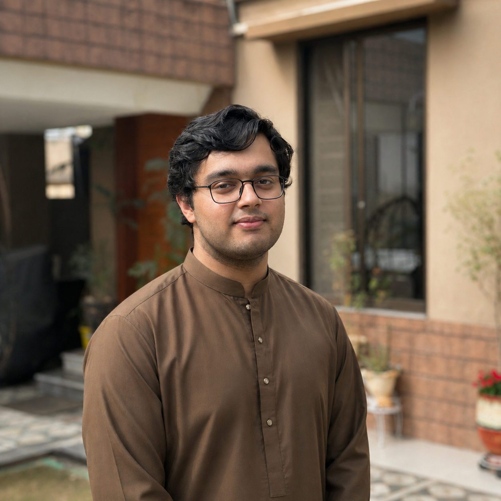

Ali Block, Street 3, Sector B, Bahria Town, Lahore | mbinmohsin.5426@gmail.com
4th Semester student with experience in field work and data manipulation, looking for an internship in IT Department OR any Computer related field.
Current CGPA: 3.27 / 4.0
Relevant Coursework: AICT, Programming Fundamentals, Database Systems, Computer Networks.